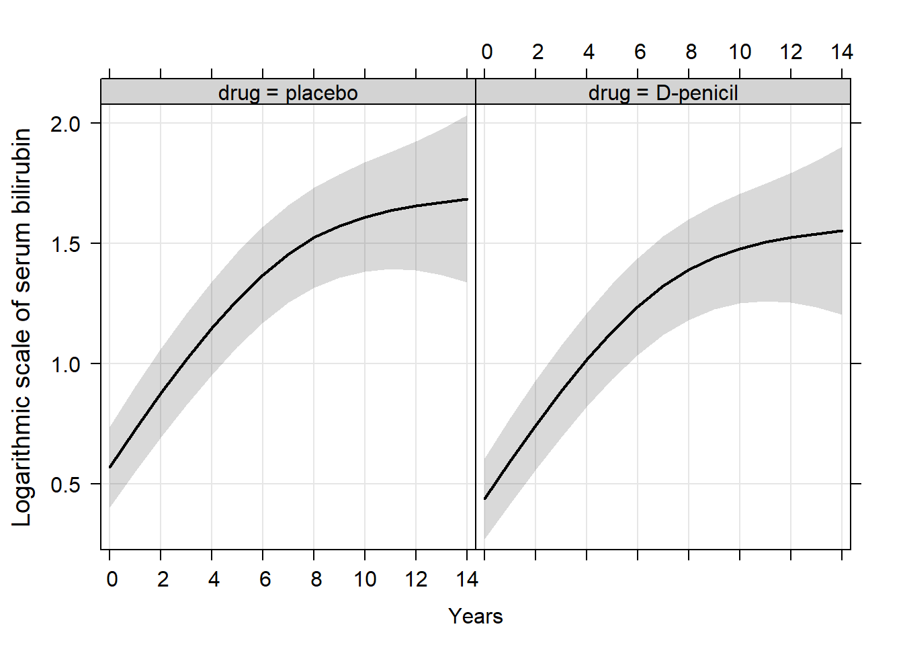
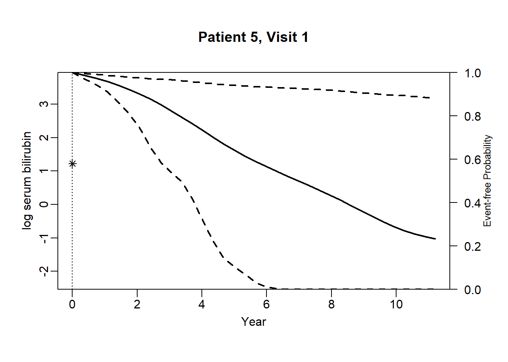
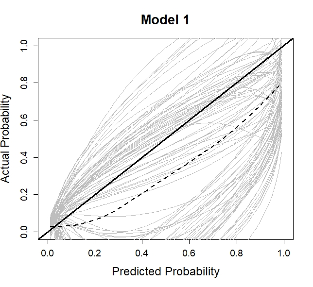

Dynamic prediction using joint models of longitudinal and time-to-event data
Eleni-Rosalina Andrinopoulou, Department of Biostatistics, Erasmus Medical Center
03 February 2021
In this webpage, we describe and show the analysis that was performed in the manuscipt: Reflections on modern methods: Dynamic prediction using joint models of longitudinal and time-to-event data
Packages
The R packages and versions that are used cen be seen below:
| Software: | R version 4.0.3 (2020-10-10) |
| JMbayes | 0.8.85 |
| lattice | 0.20.41 |
| splines | 4.0.3 |
| effects | 4.2.0 |
Analysis
A first imporant step is to investigate the data set. More details can be found in the tab Data.
Fit a joint model
A mixed-effects submodel can be fitted using the lme function as:
fit_nonlinear2 <- lme(log(serBilir) ~ ns(year, 3) + age + sex + drug,
random = list(id = pdDiag(form = ~ ns(year, 3))),
data = pbc2)A survival submodel can be fitted using the coxph function as:
survFit.pbc <- coxph(Surv(years, status2) ~ age + sex + drug, data = pbc2.id, x = TRUE)Then the joint model can be fitted using the jointModelBayes function as:
jointFit.pbc <- jointModelBayes(fit_nonlinear2, survFit.pbc, timeVar = "year",
baseHaz = "regression-splines", verbose = FALSE)
summary(jointFit.pbc)
Call:
jointModelBayes(lmeObject = fit_nonlinear2, survObject = survFit.pbc,
timeVar = "year", baseHaz = "regression-splines", verbose = FALSE)
Data Descriptives:
Longitudinal Process Event Process
Number of Observations: 1945 Number of Events: 140 (44.9%)
Number of subjects: 312
Joint Model Summary:
Longitudinal Process: Linear mixed-effects model
Event Process: Relative risk model with spline-approximated
baseline risk function
Parameterization: Time-dependent value
LPML DIC pD
-3396.213 6482.845 1219.961
Variance Components:
StdDev Corr
(Intercept) 0.9975 (Intr) n(,3)1 n(,3)2
ns(year, 3)1 1.4842 0.1632
ns(year, 3)2 1.5134 0.1964 0.6785
ns(year, 3)3 1.8897 0.0552 0.0339 0.5985
Residual 0.2877
Coefficients:
Longitudinal Process
Value Std.Err Std.Dev 2.5% 97.5% P
(Intercept) 0.6788 0.0107 0.3667 -0.0331 1.3946 0.063
ns(year, 3)1 1.0685 0.0063 0.1064 0.8585 1.2862 <0.001
ns(year, 3)2 1.4036 0.0089 0.1076 1.2042 1.6329 <0.001
ns(year, 3)3 1.1765 0.0125 0.1419 0.9109 1.4689 <0.001
age 0.0010 0.0002 0.0058 -0.0102 0.0127 0.864
sexfemale -0.1459 0.0054 0.1845 -0.5091 0.2140 0.434
drugD-penicil -0.1300 0.0035 0.1178 -0.3640 0.1031 0.256
Event Process
Value Std.Err Std.Dev 2.5% 97.5% P
age 0.0406 0.0011 0.0074 0.0257 0.0543 <0.001
sexfemale -0.2892 0.0327 0.1924 -0.6431 0.0715 0.156
drugD-penicil -0.1806 0.0549 0.1911 -0.5838 0.1572 0.280
Assoct 1.2810 0.0049 0.0953 1.0981 1.4776 <0.001
MCMC summary:
iterations: 20000
adapt: 3000
burn-in: 3000
thinning: 10
time: 2.5 minIn order to visualize
ef <- Effect(c("year", "drug"), fit_nonlinear2, typical=mean, given.values=c(sexfemale=1))
trellis.par.set(strip.background=list(col="lightgrey"))
plot(ef, ylab = list("Logarithmic scale of serum bilirubin", cex = 1.2), xlab = list("Years", cex = 1.2),
rug = FALSE, colors = 1, lwd = 2, grid = TRUE, main = "")
Obtain dynamic predictions
Further explanation for equation (5)
The first term of the integrand in (4) can be written as \[\begin{eqnarray} \nonumber\mbox{Pr}(T^*_{l} \geq u \mid T^*_{l}> t, \tilde{y}_{l}(t);\boldsymbol{\theta})&&=\nonumber\int \mbox{Pr}(T^*_{l} \geq u\mid T^*_{l}> t, \tilde{y}_{l}(t), \boldsymbol{b}_{l};\boldsymbol{\theta})p(\boldsymbol{b}_{l}\mid T^*_{l}> t, \tilde{y}_{l}(t);\boldsymbol{\theta})d\boldsymbol{b}_{l}\\ &&=\nonumber\int \mbox{Pr}(T^*_{l} \geq u\mid T^*_{l}> t, \boldsymbol{b}_{l};\boldsymbol{\theta})p(\boldsymbol{b}_{l}\mid T^*_{l}> t, \tilde{y}_{l}(t);\boldsymbol{\theta})d\boldsymbol{b}_{l}\\ &&=\int\frac{S(u \mid \boldsymbol{b}_{l};\boldsymbol{\theta})}{S(t \mid \boldsymbol{b}_{l};\boldsymbol{\theta})}p(\boldsymbol{b}_{l}\mid T^*_{l}> t, \tilde{y}_{l}(t);\boldsymbol{\theta})d\boldsymbol{b}_{l}, \label{Pr1} \end{eqnarray}\] where \(S(. \mid \boldsymbol{b}_{l};\boldsymbol{\theta})\) denotes the conditional survival function on the random effects of patient \(l\). The simplification from line 2 to line 3 is achieved under the assumption that the longitudinal and the survival outcomes are independent, given the random effects.
newdata_5 <- pbc2[pbc2$id == 5, ]
survRes_5 <- list()
for (o in 1:dim(newdata_5)[1]) {
newdataDyn_5 <- newdata_5[1:o, ]
survRes_5[[o]] <- survfitJM(object = jointFit.pbc, newdata = newdataDyn_5, idVar = "id", simulate = TRUE,
survTimes = NULL, last.time = NULL, M = 200,
CI.levels = c(0.025, 0.975), scale = 1.6)
}for (i in 1:dim(newdata_5)[1]) {
plot.survfit.JMbayes(survRes_5[[i]], estimator = "mean", conf.int = TRUE, include.y = TRUE,
lwd = 2, col = 1, cex.lab.z = 0.8,
ylab2 = "log serum bilirubin", ylab = "Event-free Probability",
xlab = "Year", mgp = c(1.7, 0.5, 0),
main = paste0("Patient ", unique(newdata_5$id), ", Visit ", i))
} 
newdata_15 <- pbc2[pbc2$id == 15, ]
survRes_15 <- list()
for (o in 1:dim(newdata_15)[1]) {
newdataDyn_15 <- newdata_15[1:o, ]
survRes_15[[o]] <- survfitJM(object = jointFit.pbc, newdata = newdataDyn_15, idVar = "id", simulate = TRUE,
survTimes = NULL, last.time = NULL, M = 200,
CI.levels = c(0.025, 0.975), scale = 1.6)
}for (i in 1:dim(newdata_15)[1]) {
plot.survfit.JMbayes(survRes_15[[i]], estimator = "mean", conf.int = TRUE, include.y = TRUE,
lwd = 2, col = 1, cex.lab.z = 0.8,
ylab2 = "log serum bilirubin", ylab = "Event-free Probability",
xlab = "Year", mgp = c(1.7, 0.5, 0),
main = paste0("Patient ", unique(newdata_15$id), ", Visit ", i))
} newdata_42 <- pbc2[pbc2$id == 42, ]
survRes_42 <- list()
for (o in 1:(dim(newdata_42)[1]-3)) {
newdataDyn_42 <- newdata_42[1:o, ]
survRes_42[[o]] <- survfitJM(object = jointFit.pbc, newdata = newdataDyn_42, idVar = "id", simulate = TRUE,
survTimes = NULL, last.time = NULL, M = 200,
CI.levels = c(0.025, 0.975), scale = 1.6)
}for (i in 1:(dim(newdata_42)[1]-3)) {
plot.survfit.JMbayes(survRes_42[[i]], estimator = "mean", conf.int = TRUE,
include.y = TRUE, lwd = 2, col = 1, cex.lab.z = 0.8,
ylab2 = "log serum bilirubin", ylab = "Event-free Probability",
xlab = "Year", mgp = c(1.7, 0.5, 0),
main = paste0("Patient ", unique(newdata_42$id), ", Visit ", i))
} Evaluate the predictions
First load the functions for the calibration curves that are presented in the tab Functions.
Model 1
Fit a joint model as before. In particular, we assume a linear mixed-effects submodel with a linear time structure in both the fixed and the random effects. We, moreover, assume the underlying value of serum bilirubin to be associated with the survival outcome.
fit1 <- lme(log(serBilir) ~ year + age + sex + drug, random =~ year | id, data = pbc2)
survFit1 <- coxph(Surv(years, status2) ~ age + sex + drug, data = pbc2.id, x = TRUE)
jointFit1 <- jointModelBayes(fit1, survFit1, timeVar = "year",
baseHaz = "regression-splines", verbose = FALSE)The predictive performance measures are first obtained using the original data set. We assume a prediction window of 5 - 7 years.
auc_app <- aucJM(jointFit1, newdata = pbc2,
Tstart = 5, Thoriz = 7)
pe_app <- prederrJM(jointFit1, newdata = pbc2,
Tstart = 5, Thoriz = 7)
cal_app <- calJM(jointFit1, newdata = pbc2,
Tstart = 5, Thoriz = 7)We calculate the optimist as below.
n <- dim(pbc2.id)[1]
auc_opt <- numeric()
pe_opt <- numeric()
cal_opt <- list()
for (i in 1:100) {
print(i)
# A sample of size n is generated with replacement from the original data set,
# where patients are drawn by identification number.
set.seed(2020 + i)
n_new <- sample(1:n, n, replace=TRUE)
n_new <- sort(n_new, decreasing = FALSE)
trainingData <- NULL
k <- 1
for (j in 1:length(n_new)){
n_len <- length(pbc2$id[pbc2$id %in% n_new[j]])
newdata <- pbc2[pbc2$id %in% n_new[j],]
newdata$id <- as.numeric(newdata$id)
newdata$id <- k
trainingData <- rbind(trainingData, newdata)
k <- k + 1
}
trainingData.id <- trainingData[!duplicated(trainingData$id), ]
# A new model is fitted using the generated sample and including
# all n patients and all time points.
fit1 <- lme(log(serBilir) ~ year + age + sex + drug,
random =~ year | id,
data = trainingData)
survFit1 <- coxph(Surv(years, status2) ~ age + sex + drug,
data = trainingData.id, x = TRUE)
jointFit1 <- jointModelBayes(fit1, survFit1, timeVar = "year",
baseHaz = "regression-splines")
# The performance measures for the model are tested on the bootstrap data set
# but using only the data up to time t.
auc_boot <- aucJM(jointFit1, newdata = trainingData,
Tstart = 5, Thoriz = 7)
pe_boot <- prederrJM(jointFit1, newdata = trainingData,
Tstart = 5, Thoriz = 7)
cal_boot <- calJM(jointFit1, newdata = trainingData,
Tstart = 5, Thoriz = 7)
# The performance of the model is also evaluated on the original data set up to time t.
auc_orig <- aucJM(jointFit1, newdata = pbc2,
Tstart = 5, Thoriz = 7)
pe_orig <- prederrJM(jointFit1, newdata = pbc2,
Tstart = 5, Thoriz = 7)
cal_orig <- calJM(jointFit1, newdata = pbc2,
Tstart = 5, Thoriz = 7)
# The optimism in the prediction performance is estimated by subtracting the measures boot and org.
auc_opt[i] <- auc_boot$auc - auc_orig$auc
pe_opt[i] <- pe_boot$prederr - pe_orig$prederr
cal_opt[[i]] <- cal_boot$y - cal_orig$y
}Finally, we obtain the corrected measures and present the results.
auc_corr = auc_app$auc - auc_opt
pe_corr = pe_app$prederr + pe_opt
cal_corr = lapply(cal_opt, function(x) {cal_app$y - x})
cal_corr_means <- rowMeans(do.call(cbind, cal_corr), na.rm = TRUE)
plot(0.5, 0.5, xlim = c(0,1), ylim = c(0,1), type = "n",
xlab = "Predicted Probability",
ylab = "Actual Probability",
main = "Model 1",
cex.axis = 1.2, cex.lab = 1.5, cex.main = 1.7)
lapply(cal_corr, function(x) lines(cal_app$x, x, col ="grey"))
abline(0, 1, lwd = 3, col = 1)
lo <- loess(cal_corr_means ~ cal_app$x)
lines(cal_app$x, predict(lo), col = 1, lwd = 2 , lty = 2)
boxplot(auc_corr, ylab = "AUC")
boxplot(pe_corr, ylab = "PE")

Model 4
Fit a joint model as before. In particular, we assume a multivariate mixed-effects submodel including the underlying value and slope of serum bilirubin and the underlying value of spiders. A linear time structure in both the fixed and the random effects is used. A random intercept and slope are assumed for the outcome serum bilirubin while a random intercept is assumed for the outcome spiders.
Forms <- list("log(serBilir)" = "value",
"log(serBilir)" = list(fixed = ~ 1, random = ~ 1,
indFixed = 2, indRandom = 2, name = "slope"),
"spiders" = "value")
fit4 <- mvglmer(list(log(serBilir) ~ year + age + sex + drug + (year | id),
spiders ~ year + age + sex + drug + (1 | id)),
families = list(gaussian, binomial),
data = pbc2)
survFit4 <- coxph(Surv(years, status2) ~ age + sex + drug,
data = pbc2.id, model = TRUE)
jointFit4 <- mvJointModelBayes(fit4, survFit4, timeVar = "year", Formulas = Forms)The predictive performance measures are first obtained using the original data set. We assume a prediction window of 5 - 7 years.
auc_app <- aucJM(jointFit4, newdata = pbc2,
Tstart = 5, Thoriz = 7)
pe_app <- prederrJM(jointFit4, newdata = pbc2,
Tstart = 5, Thoriz = 7)
cal_app <- calJM.mv(jointFit4, newdata = pbc2,
Tstart = 5, Thoriz = 7)We calculate the optimist as below.
n <- dim(pbc2.id)[1]
auc_opt <- numeric()
pe_opt <- numeric()
cal_opt<- list()
for (i in 1:100) {
print(i)
# A sample of size n is generated with replacement from the original data set,
# where patients are drawn by identification number.
set.seed(2020 + i)
n_new <- sample(pbc2$id, dim(pbc2.id)[1], replace=TRUE)
n_new <- sort(n_new, decreasing = FALSE)
trainingData <- NULL
k <- 1
for (j in 1:length(n_new)){
n_len <- length(pbc2$id[pbc2$id %in% n_new[j]])
newdata <- pbc2[pbc2$id %in% n_new[j],]
newdata$id <- as.numeric(newdata$id)
newdata$id <- k
trainingData <- rbind(trainingData, newdata)
k <- k + 1
}
trainingData.id <- trainingData[!duplicated(trainingData$id), ]
# A new model is fitted using the generated sample and including
# all n patients and all time points.
Forms <- list("log(serBilir)" = "value",
"log(serBilir)" = list(fixed = ~ 1, random = ~ 1,
indFixed = 2, indRandom = 2, name = "slope"),
"spiders" = "value")
fit4 <- mvglmer(list(log(serBilir) ~ year + age + sex + drug + (year | id),
spiders ~ year + age + sex + drug + (1 | id)),
families = list(gaussian, binomial),
data = trainingData)
survFit4 <- coxph(Surv(years, status2) ~ age + sex + drug,
data = trainingData.id, model = TRUE)
jointFit4 <- mvJointModelBayes(fit4, survFit4, timeVar = "year", Formulas = Forms)
# The performance measures for the model are tested on the bootstrap data set
# but using only the data up to time t.
auc_boot <- aucJM(jointFit4, newdata = trainingData,
Tstart = 5, Thoriz = 7)
pe_boot <- prederrJM(jointFit4, newdata = trainingData,
Tstart = 5, Thoriz = 7)
cal_boot <- calJM.mv(jointFit4, newdata = trainingData,
Tstart = 5, Thoriz = 7)
# The performance of the model is also evaluated on the original data set up to time t.
auc_orig <- aucJM(jointFit4, newdata = pbc2,
Tstart = 5, Thoriz = 7)
pe_orig <- prederrJM(jointFit4, newdata = pbc2,
Tstart = 5, Thoriz = 7)
cal_orig <- calJM.mv(jointFit4, newdata = pbc2,
Tstart = 5, Thoriz = 7)
# The optimism in the prediction performance is estimated by subtracting the measures boot and org.
auc_opt[i] <- auc_boot$auc - auc_orig$auc
pe_opt[i] <- pe_boot$prederr - pe_orig$prederr
cal_opt[[i]] <- cal_boot$y - cal_orig$y
}Finally, we obtain the corrected measures and present the results.
auc_corr = auc_app$auc - auc_opt
pe_corr = pe_app$prederr + pe_opt
cal_corr = lapply(cal_opt, function(x) {cal_app$y - x})
cal_corr_means <- rowMeans(do.call(cbind, cal_corr), na.rm = TRUE)
plot(0.5, 0.5, xlim = c(0,1), ylim = c(0,1), type = "n",
xlab = "Predicted Probability",
ylab = "Actual Probability",
main = "Model 1",
cex.axis = 1.2, cex.lab = 1.5, cex.main = 1.7)
lapply(cal_corr, function(x) lines(cal_app$x, x, col ="grey"))
abline(0, 1, lwd = 3, col = 1)
lo <- loess(cal_corr_means ~ cal_app$x)
lines(cal_app$x, predict(lo), col = 1, lwd = 2 , lty = 2)
boxplot(auc_corr, ylab = "AUC")
boxplot(pe_corr, ylab = "PE")


Statistical terminology
Mixed-effects models
The mixed effects models take into account that measurements from the same subjects may be more correlated than measurements from different subjects. They consist of two parts, the fixed part and the random part. The fixed-effects part describes the average evolution in time of a specific clinical parameter under study (for example serum bilirubin), where this average is taken overall from the subjects in the sample at hand and is an estimate of the evolution of the clinical parameter in the target population. The random-effects (patient specific) part describes the evolution in time for each of the subjects under study, and accounts for the correlation in the data within subjects.
Splines
The easiest way to relax linearity is to assume polynomial effects. An alternative option is to use regression splines. In particular, they split the range of values of the continuous predictor into sub-intervals using a series of knots and within each sub-interval assume a polynomial. The polynomial function have a certain degree (i.e., constant, linear, quadratic, …)
Perperoglou, A., Sauerbrei, W., Abrahamowicz, M., & Schmid, M. (2019). A review of spline function procedures in R. BMC medical research methodology, 19(1), 46.
Bayesian framework
Bayesian statistics is an approach to applying probability to statistical problems. We have prior beliefs about a parameter and Bayesian statistics incorporates these beliefs and evidence (data), to produce new posterior beliefs.
© Eleni-Rosalina Andrinopoulou